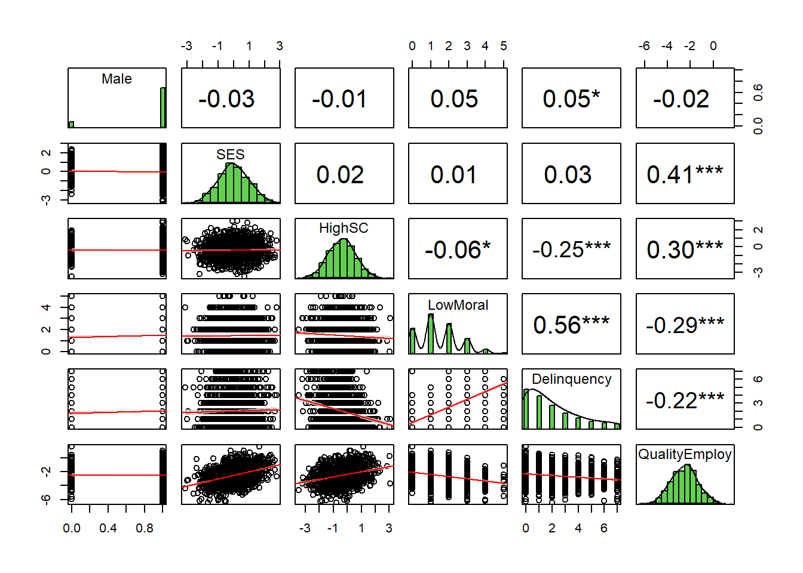
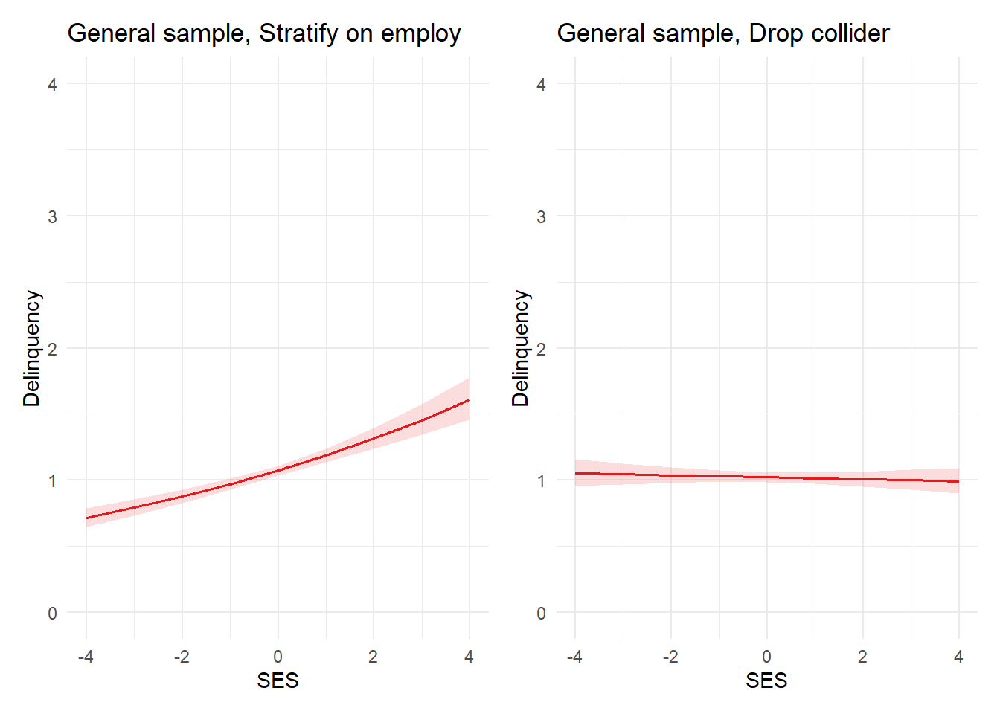

Learn to fear colliders, the rancor in your regression model. Then, learn to face those fears and overcome colliders with a DAG, the elegant weapon of a Jedi scientist.
Author
Jon Brauer and Jake Day
Published
June 6, 2023
Collider: The rancor in your regression
Are you afraid of colliders? You will be… You will be.
In our previous post on causation without correlation, we concluded with a brief caution about how an otherwise fun fishing trip for indirect effects might be spoiled by the collider monster in your modeling closet. We referenced Julia Rohrer’s blog entry on hunting for indirect effects, then noted the following:
Her example beautifully, or frighteningly, illustrates how a collider can produce an erroneous inference about an indirect effect. You might be wondering to yourself: what the heck is a collider? Great question. To us, it is the scary monster in our statistical modeling closet that keeps us up at night; neither of us have ever really seen the monster, but we’ve read enough stories about it to be convinced that it is there. We’ll try tackling that one another time…
If you’d prefer a crime-relevant analogy, colliders also have been referred to as the mass murderer of interpretable statistical analyses. Rohrer has another excellent post introducing these modeling monsters. However, the first time we can remember encountering a systematic discussion of colliders and the problems they pose for our statistical models was in our initial reading of Richard McElreath’s Statistical Rethinking book. In keeping with the theme here, McElreath discusses colliders in chapter six of the current edition, which he titled The Haunted DAG and the Causal Terror.
We think such fear-inspired collider analogies are apt as, once you understand them, it is hard not to fear, loathe, and respect them. In fact, after our initial reading of McElreath’s book (and watching his lectures), we came away pretty terrified that all our prior analyses were potentially misspecified. Yet, after that first encounter, we had not gotten a full glimpse of the villain - we lacked a full understanding and appreciation of how much they may be affecting the criminological literature (and our own previous work). Now that we have seen them, we think a collider is like a rancor - the terrifying and destructive monster from the Star Wars universe - that has been set loose to wreak havoc on your regression model.
Who should care about colliders?
Before going any deeper, we should note that colliders and collider bias are relevant to anyone using any type of regression model to estimate the causal effect of a variable on an outcome - or to determine whether one variable has an “influence” on another variable - irrespective of the functional form (e.g., linear; logistic; negative binomial), complexity, estimation method (e.g., OLS; ML; Bayes), or statistical program you use. Also, if you ever add covariates to your regression models to “adjust” for coefficient bias or “control” for alternative explanations - that is, if you use “control variables” in your regression models - then you really need to know about colliders and collider bias.
Also, if you are relatively new to the topic of colliders, then we wrote this blog for you. That does not mean we think you will understand colliders by the end of our post. We have been reading and thinking about colliders for years now, and we still find ourselves trying to get a firm grip on them. Our hope is to introduce you to colliders and to help you develop a healthy fear of them. We also hope to convince you of the importance of reading more about colliders and related topics like DAGs, adjustment sets, and the backdoor criterion; we link to many excellent and free resources on these topics throughout this post. So, by the end of our post, if you feel fearful and confused, then rest assured you are not alone! You are taking the first of many steps on a challenging but worthwhile journey with us. Now, grab some popcorn and turn on the lights for our version of a sci-fi stats thriller mashup.
Selection effects, causal force, and DAG-sabers
Perhaps without knowing it, you’ve likely encountered discussions of collider bias before in the form of selection bias. It’s probably safe to say that most social scientists get exposed to the problems with selection effects at some point in their graduate training. Indeed, it’s been at the center of high profile debates within criminology (e.g., peer influence; turning points; sentencing; specialty courts; and police use of force). On some level, we often treat selection effects as a known limitation and perhaps even a minor nuisance. However, once you comprehend that selection effects often are caused by restricting on levels of a collider or a causal descendant of a collider (and other times by selecting on an effect moderator) then, like us, you too might begin to develop a healthy fear of colliders. You might also find yourself on a quest to master the transparent use of structural causal models or directed acyclic graphs (DAGs).
Causal assumptions are the force from which our modeling power flows and that binds our scientific claims together. The transparent causal model or DAG is a powerful ally in the force that can shed light on hidden causal assumptions. They help us make essential design, modeling, and interpretive decisions with reason rather than intuition or emotion. If we (okay, this part is all Jon - IYKYK) have not yet stretched this extended Star Wars metaphor past its breaking point already, then let’s do it now. Fear (of colliders) is the path to the dark side. Confronting fear is the destiny of a Jedi (scientist). Your destiny. Below, we will face our fear of colliders and learn to overcome it with DAGs, the elegant weapon of a Jedi scientist.
Learn to fear colliders, then learn how to confront them with DAGs.
What is a collider?
Ok, so what exactly is a collider? To answer that, we should first specify a causal estimand of interest - say, the causal effect or “average marginal effect” of X on outcome Y. Once we’ve determined what exactly we are trying to estimate using data, then we might start thinking about other things - like colliquially named “third variables” - that might be related to or potentially bias our estimate of the quantity of interest.
In our experience, most criminologists understand confounding bias and immediately think of confounders when asked about “third variables” that might affect causal effect estimation. Most also seem to have reasonable intuitions regarding what to do about confounders (e.g., adjust or “control” for them to block their “backdoor” causal paths). Additionally, many criminologists are familiar with mediation - a type of “third variable” related to causal estimation that we discussed in our last post on causation without correlation. In that post, we demonstrated how adjusting for a mediator M removes part of the total causal effect of X on Y - specifically, it isolates the indirect effect of X through M - from our causal estimate.
Like confounders and mediators of the X/Y relationship, colliders have been described as another type of “third variable” that is relevant to causal effect estimation. However, unlike confounders and mediators, we get the sense that many in our field do not understand and perhaps have never even heard of colliders. So, what are they?
Well, most of the sources that we have read explicitly or implicitly define colliders as a type of third variable is caused by both X and Y. The causal diagram depicted in the figure below represents the quintessential collider example.
Show code
library(tidyverse)library(here)library(simstudy)# https://cran.r-project.org/web/packages/simstudy/vignettes/simstudy.html# https://kgoldfeld.github.io/simstudy/articles/simstudy.htmllibrary(ggplot2)library(patchwork)# library(psych) #detach to ensure alpha works with ggplot# library(devtools)# install_github("jtextor/dagitty/r")library(dagitty)library(ggdag)library(truncnorm)library(see)# devtools::install_github("strengejacke/strengejacke")library("sjPlot")library("ggthemes")library("margins")library("ggdist")library(gt)library(gtsummary)hauntedDAG1 <-dagify( Z ~ X + Y,exposure ="X",outcome ="Y",coords=list(x=c(X=1, Z=1.5, Y=2),y=c(X=0, Z=.5, Y=0) )) %>%tidy_dagitty() %>% dplyr::mutate(collider =ifelse(name !="Z", "#56B4E9", "#CC79A7"))hauntedDAG1p <- hauntedDAG1 %>%ggplot(aes(x=x, y=y, xend=xend, yend=yend)) +geom_dag_point(aes(color = collider)) +geom_dag_edges() +geom_dag_text() +theme_dag() +guides(fill ='none', color ='none') +scale_color_manual(values =c("#56B4E9","#CC79A7")) +scale_y_continuous(expand=expansion(mult=c(0.2,0.2))) +#change default expansion on y-axis min & maxggtitle("Example 1") +theme(plot.title =element_text(size =12))hauntedDAG1p
Figure 1. DAG of classic three-variable example of a collider (Z)
Colliders are like trick shots
While this common definition usefully describes some colliders, we do not think it sufficiently captures all types of colliders. Assuming you have specified an estimand and then summarized relevant causal relationships in a DAG of the theorized data generating process connecting X and Y, then a more general definition of a collider might be any node in the DAG that you can trace along a path between X and Y, irrespective of directionality, where two or more arrows meet head-to-head. Judea Pearl similarly describes colliders as follows:
“By a”path” we mean any consecutive sequence of edges, disregarding their directionalities. By “unblocked path” we mean a path that can be traced without traversing a pair of arrows that collide “head-to-head”. In other words, arrows that meet head-to-head do not constitute a connection for the purpose of passing information, such a meeting will be called a “collider”.”
Colliders are like trick shots where arrows meet head to head (in a DAG)
We have provided some example DAGs below in which the variable Z is a collider in a path between X and Y. As you will see, the collider Z is not always caused (directly or as a descendent) by the outcome Y.1 Likewise, in this blog post, we have attempted to deviate from the typical three-variable models (e.g., DAG Example 1, where X and Y cause collider Z) that we often encounter in collider explanations. Instead, we aimed to specify colliders and illustrate potential collider biases that might routinely occur from conditioning on a collider that is not necessarily an effect or a descendant of the outcome variable (Y).
Show code
hauntedDAG2 <-dagify( Y ~ X, A ~ X, B ~ Y, Z ~ A + B,exposure ="X",outcome ="Y",coords=list(x=c(X=1, A=1.5, Z=2, B=2.5, Y=3),y=c(X=-.5, A=0, Z=.5, B=0, Y=-.5) )) %>%tidy_dagitty() %>% dplyr::mutate(collider =ifelse(name !="Z", "#56B4E9", "#CC79A7"))hauntedDAG2p <- hauntedDAG2 %>%ggplot(aes(x=x, y=y, xend=xend, yend=yend)) +geom_dag_point(aes(color = collider)) +geom_dag_edges() +geom_dag_text() +theme_dag() +guides(fill ='none', color ='none') +scale_color_manual(values =c("#56B4E9","#CC79A7"))+scale_y_continuous(expand=expansion(mult=c(0.2,0.2))) +#change default expansion on y-axis min & maxggtitle("Example 2") +theme(plot.title =element_text(size =12))hauntedDAG3 <-dagify( Y ~ X + M + C, Z ~ X + M, M ~ X + C,exposure ="X",outcome ="Y",coords=list(x=c(X=1, M=1.5, Y=2, Z=1, C=2),y=c(X=0, M=.5, Y=0, Z=1, C=1) )) %>%tidy_dagitty() %>% dplyr::mutate(collider =ifelse(name !="Z", "#56B4E9", "#CC79A7"))hauntedDAG3p <- hauntedDAG3 %>%ggplot(aes(x=x, y=y, xend=xend, yend=yend)) +geom_dag_point(aes(color = collider)) +geom_dag_edges() +geom_dag_text() +theme_dag() +guides(fill ='none', color ='none') +scale_color_manual(values =c("#56B4E9","#CC79A7")) +scale_y_continuous(expand=expansion(mult=c(0.2,0.2))) +#change default expansion on y-axis min & maxggtitle("Example 3") +theme(plot.title =element_text(size =12))hauntedDAG4 <-dagify( Z ~ X + C, Y ~ X + C, X ~ C,exposure ="X",outcome ="Y",coords=list(x=c(Z=.5, X=1, C=1.5, Y=2),y=c(Z=.5, X=0, C=.5, Y=0) )) %>%tidy_dagitty() %>% dplyr::mutate(collider =ifelse(name !="Z", "#56B4E9", "#CC79A7"))hauntedDAG4p <- hauntedDAG4 %>%ggplot(aes(x=x, y=y, xend=xend, yend=yend)) +geom_dag_point(aes(color = collider)) +geom_dag_edges() +geom_dag_text() +theme_dag() +guides(fill ='none', color ='none') +scale_color_manual(values =c("#56B4E9","#CC79A7")) +scale_y_continuous(expand=expansion(mult=c(0.2,0.2))) +#change default expansion on y-axis min & maxggtitle("Example 4") +theme(plot.title =element_text(size =12))(hauntedDAG1p + hauntedDAG2p) / (hauntedDAG3p + hauntedDAG4p)
Figure 2. Examples of colliders (Z) in four different DAGs
Why should we care about colliders?
So, how do colliders affect attempts to estimate the causal effect of X on Y? Well, when a causal system includes a collider in a path between X and Y, then X and Y are connected in such a way that, similar to mediators and confounders, we can expect the “passing” of empirical information (statistical dependence) between variables under certain conditions. Yet, paths between X and Y that contain confounders and mediators begin as unblocked and, therefore, causal estimates of the effect of X on Y will contain information from these types of third variables unless we stratify or condition on them to block their empirical information from passing between X and Y. In symmetric contrast, a path containing a collider begins as blocked, meaning that causal estimates of the effect of X on Y do not initially contain information about colliders. However, stratifying or conditioning on a collider unblocks this path, allowing information to flow through the collider and, therefore, biasing estimates of the causal effect of X on Ys. Likewise, in reference to colliders, Pearl states:
“When we measure a common effect of two independent causes, the causes becomes dependent, because finding the truth of one makes the other less likely (or”explained away”), and refuting one implies the truth of the other.”
DAGs are extremely useful, then, in helping us identify all paths through which information might flow between X and Y and, likewise, in figuring out which variables we should be including in our models to adjust for confounding bias and which variables we should not include in our models to avoid removing indirect causal effects and/or introducing collider bias.
For instance, using the fourth example above, we can identify all paths between X and Y and identify appropriate adjustment sets automatically using ggdag::ggdag_paths() and ggdag::ggdag_adjustment_set(). You will note below that the path from X -> Y and X <- C -> Y are open or unblocked paths, but the path from X -> Z <- C -> Y is not an open path - unless we open it by conditioning on Z and, in turn, bias our estimate of the effect of X on Y. Likewise, the appropriate adjustment set for Example 4 contains only C, meaning we should control for C but not Z (or C and Z).
Figure 3. Unblocked paths (top) & adjustment set (bottom) from Example 4 DAG above
Hopefully, it is clear by now that conditioning on a collider (and other issues) can inadvertently occur when we do not have clear causal reasons for selecting control variables in our models. Yet, depending upon the research question & estimand of interest, conditioning on a collider can also happen when we analyze data collected via research designs involving known selection on variables related to causal processes of interest. This might pose particular challenges for criminologists investigating certain types of questions with popular data sources comprising samples of responses from youth with known criminal histories (e.g. Pathways to Desistance), or incarcerated samples, or even college student samples.
We will present examples of biases caused by conditioning on a collider with both methods (over-control & selection) using simulated and real-world data. The first two examples will use simulated data that were generated in a way that resembles some key features of real-world criminological data. The third example will rely on comparisons of real-world data collected from a college student sample and from a similarly-aged online sample.
Causal model (DAG) for simulated data
Many existing examples of collider bias are in different fields & use toy examples with only a few variables and, at least for us, do not always clearly represent the types of problems we face in criminology. Thus, if you’re like us, upon learning about collider bias, you may develop a fear of the problem, but you have difficulty imagining how such issues might affect analyses in criminology. So, a key goal in the examples below is realism. We want to present a scenario that many of us have or will encounter in the criminological wild.
In our first example, we will explore how colliders might bias estimation of the causal effects of high self-control and weak moral beliefs on delinquency.
The core causal structure underlying this part of the DAG we use to simulate data is inspired by theory and research on Situational Action Theory (SAT). Specifically, we will focus on modeling the theory’s posited interaction between moral beliefs and self-control in predicting delinquent or criminal behavior.
Figure 4: Stick figures depicting SAT’s perception-choice process
SAT’s basic claim is that most people refrain from crime for moral, not rational, reasons: Those who strongly believe that a criminal behavior is morally wrong generally will not perceive that crime as morally viable situational action alternative and, likewise, will not engage in that behavior - irrespective of their levels of self-control (i.e., executive functioning capacities). However, those with weaker moral beliefs might perceive a criminal behavior as a situational action alternative and, in such situations, their levels of self-control may become causally relevant to decision-making. As Wikstrom & Treiber explain:
“…the primary reason for individuals’ law abidance is strong moral beliefs (and moral habits) that correspond to the moral rules of the law, rather than their ability to exercise self-control…” (p.250)
“…this implies that morality is the fundamental individual characteristic in the explanation of crime and that an individual’s ability to exercise self-control plays a far more limited role…” (p.251, emphasis in original)
While SAT actually implies a complex causal structure involving a three-way (or more) interaction between moral beliefs, moral context, and self-control, we will specify a simpler DAG for the purposes of illustrating collider biases. Instead, we will aim to specify a causal structure and simulate data that builds upon the logic of many tests of SAT, which often regress delinquency or crime on self-control, moral beliefs, and their multiplicative interaction, as well as include gender and “controls” for other (presumably independent) variables.
Specifically, we will aim to generate data that resembles the interactive relationships found in such tests, like those Svensson and colleagues documented across three international samples:
Figure 5: Self-control and morality interact to predict delinquency
Yet, as we think is true in tests of most criminological theories, empirical tests of SAT often explicitly consider only a limited set of causal relationships within a data source generated by a much larger connection of complex interlinked causal processes. So, we will add a bit of plausible complexity to the DAG to illustrate how colliders might bias estimation of theorized causal effects.
DAG of causal structure underlying simulated data
Below is our DAG of a simple causal structure describing a plausible (if simplified) data generating process used to simulate data for our first two examples. We highlighted the focal estimand of interest (effect of self-control on delinquency) for our first simulation example with a red arrow.
Show code
collideDAG <-dagitty('dag{ Male -> {SelfControl MoralBeliefs Delinquency PriorFelony} SelfControl -> {Delinquency PriorFelony QualityEmploy College} MoralBeliefs -> {Delinquency PriorFelony QualityEmploy College} PriorFelony -> QualityEmploy SES -> {QualityEmploy College} College -> QualityEmploy }')coordinates( collideDAG ) <-list( x=c(PriorFelony=1, QualityEmploy=1, SelfControl=2, Male=2, MoralBeliefs=2, SES=2, Delinquency=3, College=3),y=c(PriorFelony=0, SelfControl=1, QualityEmploy=2,Male=0, MoralBeliefs=-1, SES=2, Delinquency=0, College=1) )# plot(collideDAG)#function to shorten arrows (edges)# https://stackoverflow.com/questions/65420136/how-do-you-adjust-the-arrows-in-a-ggplot-of-a-ggdagshorten_dag_arrows <-function(tidy_dag, proportion){# Update underlying ggdag objecttidy_dag$data <- dplyr::mutate(tidy_dag$data, xend = (1-proportion/2)*(xend - x) + x, yend = (1-proportion/2)*(yend - y) + y,xstart = (1-proportion/2)*(x - xend) + xend,ystart = (1-proportion/2)*(y-yend) + yend)return(tidy_dag)}collideDAGalt <-dagify( Delinquency ~ MoralBeliefs + Male + SelfControl, PriorFelony ~ MoralBeliefs + Male + SelfControl, MoralBeliefs ~ Male, SelfControl ~ Male, College ~ MoralBeliefs + SelfControl + SES, QualityEmploy ~ MoralBeliefs + SelfControl + College + SES + PriorFelony, # labels = c("Delinquency" = "Delinquency",# "MoralBeliefs" = "Moral\nBeliefs",# "Male" = "Male",# "SelfControl" = "Self-\nControl",# "PriorFelony" = "Prior\nFelony",# "College" = "Attend\nCollege",# "SES" = "SES",# "QualityEmploy" = "Quality\nEmploy"),exposure ="SelfControl",outcome ="Delinquency",coords=list(x=c(PriorFelony=1, QualityEmploy=1, SelfControl=2, Male=2, MoralBeliefs=2, SES=2, Delinquency=3, College=3),y=c(PriorFelony=0, SelfControl=-1, QualityEmploy=-2, Male=0, MoralBeliefs=1, SES=-2, Delinquency=0, College=-1) )) %>%tidy_dagitty() %>% dplyr::mutate(collider =ifelse(name %in%c("PriorFelony", "QualityEmploy", "College"), "#CC79A7", "#56B4E9"))#function to shorten arrows - set percentage to shortencollideDAGaltp <-shorten_dag_arrows(collideDAGalt, 0.08)# ggdag(collideDAGaltp, # use_labels = "label", text = FALSE)#if using label in geom_dag_text, arrange data by name then match labels to order of names in data!#print(collideDAGalt$data$name)#create factor variable to isolate edge of interest, permits specifying edge colortestdat <- collideDAGaltp %>% dplyr::mutate(myedge1 =if_else(collideDAGaltp$data$name =="SelfControl"& collideDAGaltp$data$to =="Delinquency","yes", "no") ) #try filtering plot data for only edge of interest & adding colored layer?library(ggraph)collideDAGaltp2 <- testdat %>%ggplot(aes(x=x, y=y, xend=xend, yend=yend)) +#geom_dag_point(aes(color = collider)) +# geom_dag_edges(data = function(x) filter(x, name == "SelfControl" & to == "Delinquency"), # aes(x = xstart, y = ystart), color="maroon") +geom_dag_edges(aes(x = xstart, y = ystart, edge_color=myedge1)) +geom_dag_text(label=c("Attend\nCollege", " Delinquency", "Male", "Moral\nBeliefs","Prior\nFelony", "Quality\nEmploy", "SES", "Self-\nControl"), aes(color = collider)) +# add labels# geom_dag_label_repel(# aes(label=collideDAGalt$data$label), # # fill="green",# show.legend = FALSE) + theme_dag() +guides(fill ='none', color ='none', edge_color ='none') +scale_color_manual(values =c("#56B4E9","#CC79A7")) +scale_edge_colour_manual(values=c("darkgrey", "red")) +#change second color to highlight focal myedge1 scale_y_continuous(expand=expansion(mult=c(0.2,0.2))) +#change default expansion on y-axis min & maxggtitle("Data-generating DAG") +theme(plot.title =element_text(size =12))# how to change text names in DAG nodes # https://www.r-bloggers.com/2019/10/how-to-use-math-symbols-with-ggdag/# how to change color of all edges# geom_dag_edges(edge_color = "steelblue") +collideDAGaltp2
Figure 6. Causal diagram (DAG) used to generate simulated data
As suggested, even this DAG is simplified for clarity purposes. It ignores, for instance, all other potential measured (e.g., race/ethnicity) and unmeasured confounders that might affect selection into delinquent behavior, criminal justice contact and subsequent felony conviction, and participation in a survey. Still, an important first step in analyzing data should be to precisely and transparently specify causal assumptions. Even if the causal model is wrong (as all likely are), we can learn from it because a precisely and transparently reported causal model clearly communicates the assumptions underlying our interpretation of the data and, in turn, allows others to critique, test, and challenge our causal model with alternatives.
Put differently, DAGs force the researcher to make choices, and these choices are ultimately testable. For example, in the above DAG, there is no arrow going directly from prior felony to delinquency. Thus, this DAG explicitly assumes that any empirically observed statistical dependence between prior felony and delinquency is expected to be entirely caused by other factors in the model (i.e., morality, sex, and self-control). If you think other factors than those in the DAG are important (e.g., crime as a collateral consequence of official labeling or the pains of punishment), then you can modify the DAG and examine the empirical implications of doing so. For now, we think this DAG will suit our purposes of illustrating some consequences of conditioning on colliders in three different examples using simulated yet realistic (examples 1 & 2) and real-world (example 3) criminological data.
In our first example, we will estimate the moderated effects of self-control on delinquency at different levels of moral beliefs in two samples: (1) a sample drawn at random from a “general” population with known (simulated) parameters; and (2) a “restricted” sample selected at random from the same population only after limiting the sampling frame to those with criminal felony records. This second restricted sample was motivated by the Pathways to Desistance study, a commonly used data source in criminology.
In the second example, we will use these simulated data to examine whether conditioning on a collider might bias estimates of the null effect of SES on delinquency.
In the third example, we will briefly illustrate how conditioning on a collider might impact causal estimates using real-world data from college students and MTurk workers.
Now let’s simulate some data.
Because, you know, addressing collider bias in messy real data is “just like the simulations.”
Simulating data for examples 1 & 2
For simplicity, we will assume random normal distributions for socioeconomic status (SES), employment status/quality, and self-control. We will assume Poisson distributed morality and delinquency scales. Morality’s continuous Poisson distribution is rounded down to nearest integer and truncated so negative values are recoded as zero. Delinquency’s continuous Poisson distribution is rounded to the nearest integers. These rounding procedures add a bit more noise to the data and also make these variable more comparable to the types of highly skewed, ordinal, Likert-type measures we see in our field.
For realism, the magnitudes of key simulated causal effects for the first example are relatively consistent with published correlation matrices.
For the second example, we will assume no total effect of SES on delinquency association (for rationale, see our previous blog on causation without correlation). However, we will assume a hypothetical positive effect of SES and negative effect of felony convictions on employment status/quality.
Let’s examine the bivariate correlations between our variables in the simulated “general” sample.
Show code
# https://r-coder.com/correlation-plot-r/ trimpop <- simpop %>% dplyr::select(-id)psych::pairs.panels(trimpop,smooth =FALSE, # If TRUE, draws loess smoothsscale =FALSE, # If TRUE, scales the correlation text fontdensity =TRUE, # If TRUE, adds density plots and histogramsellipses =FALSE, # If TRUE, draws ellipsesmethod ="pearson", # Correlation method (also "spearman" or "kendall")pch =21, # pch symbollm =TRUE, # If TRUE, plots linear fit rather than the LOESS (smoothed) fitcor =TRUE, # If TRUE, reports correlationsjiggle =FALSE, # If TRUE, data points are jitteredfactor =2, # Jittering factorhist.col =3, # Histograms colorstars =TRUE, # If TRUE, adds significance level with starsci =TRUE) # If TRUE, adds confidence intervals
Now, let’s examine the bivariate correlations between our variables in the simulated “restricted” sample in which participants are selected based upon felony conviction status.
Show code
# https://r-coder.com/correlation-plot-r/ trimsamp <- simsamp %>% dplyr::select(-c(id, Felony, Felonysamp))psych::pairs.panels(trimsamp,smooth =FALSE, # If TRUE, draws loess smoothsscale =FALSE, # If TRUE, scales the correlation text fontdensity =TRUE, # If TRUE, adds density plots and histogramsellipses =FALSE, # If TRUE, draws ellipsesmethod ="pearson", # Correlation method (also "spearman" or "kendall")pch =21, # pch symbollm =TRUE, # If TRUE, plots linear fit rather than the LOESS (smoothed) fitcor =TRUE, # If TRUE, reports correlationsjiggle =FALSE, # If TRUE, data points are jitteredfactor =2, # Jittering factorhist.col =3, # Histograms colorstars =TRUE, # If TRUE, adds significance level with starsci =TRUE) # If TRUE, adds confidence intervals

Even a brief examination of the bivariate correlation matrices foreshadows some of the problems we face when our research design invokes selection on a collider into the sample. For instance, imagine one group of researchers estimates gender gaps in self-control (r=-0.09), weak moral beliefs (r=0.17), and delinquency (r=0.18) using the general sample and then another group replicates their analysis using the felony sample (r=-0.01, 0.05, and 0.05, respectively). How might conclusions differ across these two studies?
Example 1: Estimating causal effect of self-control on delinquency
Let’s not get ahead of ourselves. Instead, let’s illustrate in detail with our first example. We begin by estimating a generalized linear model predicting delinquency in the simulated general sample and in the restricted sample that is selected on felony convictions. In both models, we specify a Poisson distribution with a log link for our delinquency outcome. Though we should also account for ordinal nature of predictors (e.g., model monotonic effects with cumulative logit link function), we will save that for a future blog entry.
Show code
#nonlinear models predicting delinquency in pop & sampleglm1a <-glm(Delinquency ~ Male + HighSC * LowMoral , data=simpop, family="poisson")# summary(glm1a)glm1b <-glm(Delinquency ~ Male + HighSC * LowMoral , data=simsamp, family="poisson")# summary(glm1b)# Set table themetheme_gtsummary_compact()# function for custom p-valuesroundp <-function(x) {if_else(is.na(x), NA_character_,if_else(x <0.001, format(x, digits =3, scientific =TRUE), format(round(x, 3), scientific = F)) ) } # function for reg output w/custom p-valuesregsum <-function(mymod) {tbl_regression(mymod, intercept=TRUE, pvalue_fun = roundp) %>%add_significance_stars(hide_se =FALSE,hide_ci =FALSE,hide_p =FALSE )}regsum(glm1a) %>%as_gt() %>% gt::tab_header(title ="Example 1: Poisson model 1a, General sample")
Example 1: Poisson model 1a, General sample
Characteristic
log(IRR)1,2
SE2
95% CI2
p-value
(Intercept)
-0.50***
0.022
-0.55, -0.46
4.51e-115
Male
0.17***
0.024
0.12, 0.22
4.22e-13
HighSC
-0.23***
0.018
-0.26, -0.19
2.27e-35
LowMoral
0.50***
0.010
0.48, 0.52
0.00e+00
HighSC * LowMoral
-0.01
0.009
-0.03, 0.00
0.133
1 *p<0.05; **p<0.01; ***p<0.001
2 IRR = Incidence Rate Ratio, SE = Standard Error, CI = Confidence Interval
2 IRR = Incidence Rate Ratio, SE = Standard Error, CI = Confidence Interval
Show code
#use min (0), mean, and +2d low moral beliefs in felony sample to plot interaction # mean(simsamp$LowMoral)# mean(simsamp$LowMoral) + 2*sd(simsamp$LowMoral)plot_glm1a <-plot_model(glm1a, type ="pred", terms =c("HighSC", "LowMoral [0,1.46,3.76]")) +theme_minimal() +coord_cartesian(xlim=c(-4,4), ylim=c(0,11)) +scale_colour_colorblind() +scale_fill_colorblind() +labs(x="High self-control", y="Delinquency", title="General sample") plot_glm1b <-plot_model(glm1b, type ="pred", terms =c("HighSC", "LowMoral [0,1.46,3.76]")) +theme_minimal() +coord_cartesian(xlim=c(-4,4), ylim=c(0,11)) +scale_colour_colorblind() +scale_fill_colorblind() +labs(x="High self-control", y="Delinquency", title="Felony sample") plot_glm1a + plot_glm1b +plot_layout(guides ='collect')
Success! The plot on the left confirms that our simulation recreated the moderated effects of self-control on delinquency across levels of moral beliefs as documented in earlier research (e.g., see Figure 5 above, though note our x-axis is reversed and we specified a nonlinear functional form).
Detour: On interactions in nonlinear models, psychoastronomy, & posterity
Before moving on, let’s take a brief detour. Note the interaction coefficient between high self-control and low morality is not statistically significant in the general sample (model 1a). Yet, we know there is an interaction in that sample because we simulated it to be there! Likewise, the nonparallel lines in the general sample’s plot confirm the existence of the exact interaction on the outcome scale that we intended to simulate.
Meanwhile, notice the interaction coefficient is statistically significant in the felony sample (model 1b). However, the outcome scale plot shows estimated effects of self-control on delinquency are nearly parallel (i.e., little to no interaction) across the minimum, mean, and +2SD values of low moral beliefs. At the very least, these plots imply a much stronger interaction on the outcome scale in the general sample compared to the felony sample, which is the exact opposite conclusion one might draw from a naive interpretation of the magnitude and statistical significance of the model’s linear interaction coefficients.
Beware naive interpretations of interaction terms in models with nonlinear link functions - it’s a trap!
Hence, these simulated results help illustrate an important lesson: Never rely on the statistical significance test results of an interaction term in a generalized linear model with a nonlinear link function (e.g., logistic; Poisson; negative binomial) to determine whether there is a significant interaction.2 Instead, we recommend estimating and plotting the potential interaction on the outcome probability or count scale and calculating predicted marginal contrasts when estimating and interpreting these types of models.
This is not simply an issue of preferences, nor is it an insignificant concern - and no, simply reporting odds ratios or risk ratios does not solve the problem either. Rather, the issue stems from fundamental yet oft-misunderstood differences between linear and generalized linear models. We are diving deeper into this issue with additional examples in an upcoming blog post. For now, we do not expect you to just take our word for it. Here are recent editors of American Sociological Review offering guidelines on the same issue:
“The case is closed: don’t use the coefficient of the interaction term to draw conclusions about statistical interaction in categorical models such as logit, probit, Poisson, and so on.”
Yes, we know that many of us in our field were trained to rely on the presence or absence of stars3 next to an interaction coefficient to make inferences about the existence and nature of “significant” effects from regression models - including interaction effects in generalized linear models. Likewise, we know that the prospect of reading and learning new methods can be overwhelming - not to mention academia’s structural disincentives to do so. Have no fear - there are other alternatives to stepping up to this challenge! For instance, we can just skip all the hassle of collecting expensive data, building appropriate models, and correctly interpreting results and, instead, use a magic 8-ball or a coin-flip algorithm to make inferences. After all, though unreliable and lacking any evidentiary value, such random methods might be less biased than many statistical decision-making procedures. Or, if you do not want to risk subjecting your desired findings to the whims of chance, you could just ask ChatGPT to make up the results for you!4
If you have read this far, we think it is likely that you care about science, like to learn, and want to do careful work. If we are right, then please do not use p-values and significance stars to make inferences about interaction terms in generalized linear models with nonlinear link functions. Also, please do not use p-values and significance stars to make decisions about which variables to include as controls in your models. Rather, use theory to generate a plausible causal model (DAG), then choose which variables to include - and which variables to exclude - based on your estimand of interest and implications derived from your transparent causal model. Again, do not just take our word for it - listen to McElreath’s 2023 lecture on good and bad controls. At around the 42:15 mark, he states:
“There are lots of heuristics that are taught in the sciences for choosing control variables and unfortunately most of them are simply wrong and damaging. One of the approaches of course is to just add everything in the spreadsheet and see what’s significant. This is the YOLO strategy. There is no statistical framework that justifies this at all but it is a great way to get published because you can farm asterisks and publish them and leave a trail of damage through the scientific literature that can last for decades. Not the posterity we should aspire to.”
So you want your research to change the world - for the better, right?
Selection biases are not always easy to predict
Ok, let’s get back on track. So far, we have seen some evidence that selecting on felony status when collecting data might bias inferences about important substantive questions in criminology. First, a quick glance at bivariate correlations revealed that the magnitude of estimated gender differences in delinquency, self-control, moral beliefs, and even employment outcomes are substantially biased towards zero in the restricted felony sample. Second, a theoretically expected interaction between self-control and delinquency that exists in the general sample was not clearly observed in the felony sample.
Specifically, those with the strongest moral beliefs constraining delinquency (i.e., LowMoral == 0) are not expected to engage in delinquency and, therefore, self-control should be unimportant to (i.e., have no effect on) delinquency since there is little to no temptation to resist. This is exactly what we see in the general sample plot. However, in the felony sample plot, self-control is predicted to have a negative effect on delinquency of similar magnitude for respondents with strong (==0), average, and weak (+2SD) moral beliefs.
Note, too, that the truncated variation from selection bias did not simply result in attenuated effect estimates in the felony sample. In fact, the magnitude of the estimated average marginal effect of self-control on delinquency is upwardly biased in the felony sample. Below, we plot the average marginal effect (AME) of self-control on delinquency in both samples, alongside a plot of the predicted delinquency count at each value of self-control in both samples.
Show code
#marginal effect of self-control plots#plot 1 - AME of self-control (on response) in both samples #NEED TO EXTRACT & CREATE PLOTame_scpop <-summary(margins(glm1a, variables ="HighSC"))ame_scpop <- ame_scpop %>%mutate(Felonysamp =0)ame_scsamp <-summary(margins(glm1b, variables ="HighSC"))ame_scsamp <- ame_scsamp %>%mutate(Felonysamp =1)dat <-bind_rows(ame_scpop, ame_scsamp) %>%mutate(Felonysamp =as.factor(Felonysamp))coefplot <-ggplot(data = dat,aes(x = AME, y =reorder(Felonysamp, desc(Felonysamp)), xmin = lower, xmax = upper, fill = Felonysamp, col = Felonysamp)) +geom_pointrange() +scale_color_manual(values =c("#E69F00", "#009E73")) +scale_fill_manual(values =c("#E69F00", "#009E73")) +geom_vline(xintercept =0, linetype="dotted") +coord_cartesian(xlim=c(-.55,.1)) +theme_minimal() +labs(x="Average Marginal Effect of Self-control", y="Sample") +theme(legend.position ="none")#plot 2 - predicted delinquency count by self-control in both samples plot_glm1c <-plot_model(glm1a, type ="pred", terms ="HighSC") +theme_minimal() +coord_cartesian(xlim=c(-4,4), ylim=c(0,5)) +scale_colour_colorblind() +scale_fill_colorblind() +labs(x="High self-control", y="Delinquency", title="General sample") plot_glm1d <-plot_model(glm1b, type ="pred", terms ="HighSC") +theme_minimal() +coord_cartesian(xlim=c(-4,4), ylim=c(0,5)) +scale_colour_colorblind() +scale_fill_colorblind() +labs(x="High self-control", y="Delinquency", title="Felony sample") # plot_glm1c + plot_glm1d + plot_layout(guides = 'collect')#Extract lineribbon data & combine plots into one custom plot# Create own plot instead of plot_model()plot_glm1cd <-ggplot() +geom_jitter(data=simpop, aes(y=Delinquency,x=HighSC, fill = Felonysamp, color = Felonysamp), alpha=.2, shape=21, linewidth=2, width=.2, height=.2) +scale_color_manual(values =c("#E69F00", "#009E73")) +scale_fill_manual(values =c("#E69F00", "#009E73")) +geom_line(data=plot_glm1c$data, aes(x=x, y=predicted), color="#E69F00", size=1.5) +geom_ribbon(data=plot_glm1c$data, aes(x=x, ymin=conf.low, ymax=conf.high), fill="#E69F00", alpha=.2) +geom_line(data=plot_glm1d$data, aes(x=x, y=predicted), color="#009E73", size=1.5) +geom_ribbon(data=plot_glm1d$data, aes(x=x, ymin=conf.low, ymax=conf.high), fill="#009E73", alpha=.2) +theme_minimal() +theme(axis.text.y=element_blank(),axis.ticks.y=element_blank() ) +labs(x="High self-control", y="Delinquency")coefplot + plot_glm1cd
This may be surprising to some of you. After all, it is quite common for researchers to incorrectly defend against charges of selection bias by claiming that, with truncated distributions, the documented associations are likely attenuated and hence conservative estimates. In fact, we have made such claims ourselves,5 before we learned about collider bias and came to realize that predicting the nature, extent, or direction of bias is not always as simple as it may seem.
Don’t use Jedi mind tricks. State causal assumptions (in a DAG), then identify your estimand and adjustment set.
Example 2: Estimating noncausal effect of SES on delinquency
Let’s move onto our second example, where we illustrate how improperly “controlling for” (i.e., conditioning on) a collider can bias causal estimation using our simulated general population and felony sample data. Here, we are estimating the noncausal effect of SES on delinquency. Of course, since our DAG and simulations specified no such causal effect, we should expect a near-zero estimate for the coefficient.
Let’s start with a model that includes male and employment (i.e., QualityEmploy) as control variables Why? Well, because employment might be related to SES and to delinquency, and because everyone throws in demographic controls like sex, right? I know just said that this is not how one should select controls; however, in this example, we are trying to illustrate what might happen when people DO select controls in this way.
Show code
#generalized linear model, effect of SES on delinquency in pop, strat on employment glm2a <-glm(Delinquency ~ Male + SES + QualityEmploy, data=simpop, family="poisson")# summary(glm2a)regsum(glm2a) %>%as_gt() %>% gt::tab_header(title ="Example 2: Model 2a, General sample, Collider")
Example 2: Model 2a, General sample, Collider
Characteristic
log(IRR)1,2
SE2
95% CI2
p-value
(Intercept)
-0.09***
0.019
-0.13, -0.05
1.82e-06
Male
0.24***
0.024
0.19, 0.29
1.35e-23
SES
0.10***
0.012
0.08, 0.12
2.85e-17
QualityEmploy
-0.22***
0.008
-0.23, -0.20
1.02e-171
1 *p<0.05; **p<0.01; ***p<0.001
2 IRR = Incidence Rate Ratio, SE = Standard Error, CI = Confidence Interval
Show code
plot_glm2a <-plot_model(glm2a, type ="pred", terms ="SES") +theme_minimal() +coord_cartesian(xlim=c(-4,4), ylim=c(0,4)) +labs(x="SES", y="Delinquency", title="General sample, Stratify on employ") plot_glm2a
Uh oh. We simulated data to have no (i.e., null or “0”) effect of SES on delinquency, but our model estimated a positive effect of SES on delinquency in the population. By now, it should be clear that this is caused by inappropriately conditioning on the collider employment QualityEmploy.
Why? Well, to risk overextending another analogy, think of your focal estimand (SES -> delinquency) as your room and a collider (employment) as the rancor monster in your closet that, if left unattended, will destroy your room (bias your effect estimate). Adjusting for a collider risks opening the closet door - aka, “backdoor paths” in your model - and letting the monster out. So, you need to check your DAG to be sure that the closet door is closed (the collider paths are blocked) from the outset and, if the closet door is opened (by conditioning on a collider), then you need to identify an adjustment that will close the door (block the path) to stop the monster (biasing information) from escaping.
To add another layer of complexity, a closer look at our DAG will reveal that the SES -> Delinquency estimand is not the only potential relationship depicted for which adjusting for employment threatens to bias estimates due to conditioning on a collider. Below, we also briefly discuss nonfocal coefficients in our SES -> delinquency models (e.g., for male and employment) to help illustrate how conditioning on a collider can wreak havok on an entire model and other relevant alternative models by opening backdoor paths and letting out biasing information. However, before we do this, we want to issue a strong cautionary plea:
Do not try this at home or, worse, in scientific papers. It is typically a bad idea to interpret nonfocal coefficients as if they are effect estimates for alternative estimands like we are doing in this section. We plan to explain why in more detail in a later post about the Table 2 fallacy. Here, we know that our DAG accurately reflects the causal processes that generated our simulated data, so we have a better understanding of what is happening in our models than one typically would in real world data analytic contexts. If you really feel it is necessary, then use your DAG and specify the nonfocal variable as the exposure to identify whether the variables in the model sufficiently adjust for potential bias (more on this soon).
With that cautionary statement in place, we ill-advisedly point your attention to the negative coefficient for employment in the model above. We know this should not be there, since we did not specify a causal relationship between them in our DAG and, therefore, we did not simulate a causal relationship between them. In this case, the biased coefficient arises because both employment and delinquency “listen to” (in this case, are caused by) common mechanisms, namely moral beliefs and self-control (see Pearl & Mackenzie for explanation & more on the “listens to” metaphor).
In more specific terms, tracing employment to delinquency reveals confounding paths (forks) involving self-control and moral beliefs that are not blocked by the male or SES variables. For example:
Employment <- Prior felony <- Moral beliefs -> Delinquency
Of course, if we had not simulated the data ourselves or had a reliable DAG to communicate our causal assumptions - which is exactly the situation most researchers find themselves in - then we might simply assume that the SES and employment coefficients are accurate causal estimates and then proceed to tell a story about them in a paper for publication.
Scared yet? Face your fears, then be empowered to overcome them.
Now, let’s illustrate what happens if we remove employment, the collider in our SES -> delinquency estimate, from our model.
Show code
#generalized linear model, effect of SES on delinquency in pop, drop employment glm2b <-glm(Delinquency ~ Male + SES , data=simpop, family="poisson")# summary(glm2b)regsum(glm2b) %>%as_gt() %>% gt::tab_header(title ="Example 2: Model 2b, General sample, No collider")
Example 2: Model 2b, General sample, No collider
Characteristic
log(IRR)1,2
SE2
95% CI2
p-value
(Intercept)
0.02
0.018
-0.01, 0.06
0.210
Male
0.43***
0.023
0.38, 0.47
1.43e-77
SES
-0.01
0.011
-0.03, 0.01
0.515
1 *p<0.05; **p<0.01; ***p<0.001
2 IRR = Incidence Rate Ratio, SE = Standard Error, CI = Confidence Interval
Show code
plot_glm2b <-plot_model(glm2b, type ="pred", terms ="SES") +theme_minimal() +coord_cartesian(xlim=c(-4,4), ylim=c(0,4)) +labs(x="SES", y="Delinquency", title="General sample, Drop collider") plot_glm2a + plot_glm2b

Our estimate of the causal effect of SES on delinquency is now near-zero and negligible, with zero falling well within the 95% confidence interval.
What would happen if we continue to condition on employment in our other simulated sample that also essentially conditions on felony status, or a key (simulated) cause of employment quality/status? Let’s re-estimate our two models using the simulated felony sample to see.
Show code
#generalized linear model, effect of SES on delinquency in pop, stratify employment glm2c <-glm(Delinquency ~ Male + SES + QualityEmploy, data=simsamp, family="poisson")# regsum(glm2a) %>%# as_gt() %>%# gt::tab_header(title = "Example 2: Model 2a, General sample, with Collider")regsum(glm2c) %>%as_gt() %>% gt::tab_header(title ="Example 2: Model 2c, Felony sample, with Collider")
Example 2: Model 2c, Felony sample, with Collider
Characteristic
log(IRR)1,2
SE2
95% CI2
p-value
(Intercept)
-0.03
0.076
-0.18, 0.11
0.666
Male
0.17**
0.062
0.05, 0.29
0.006
SES
0.15***
0.022
0.10, 0.19
1.58e-11
QualityEmploy
-0.22***
0.018
-0.26, -0.19
4.42e-37
1 *p<0.05; **p<0.01; ***p<0.001
2 IRR = Incidence Rate Ratio, SE = Standard Error, CI = Confidence Interval
Show code
plot_glm2c <-plot_model(glm2c, type ="pred", terms ="SES") +theme_minimal() +coord_cartesian(xlim=c(-4,4), ylim=c(0,4)) +labs(x="SES", y="", title="Felony sample, Stratify on employ") #generalized linear model, effect of SES on delinquency in pop, drop collider glm2d <-glm(Delinquency ~ Male + SES, data=simsamp, family="poisson")regsum(glm2d) %>%as_gt() %>% gt::tab_header(title ="Example 2: Model 2d, Felony sample, no Collider")
Example 2: Model 2d, Felony sample, no Collider
Characteristic
log(IRR)1,2
SE2
95% CI2
p-value
(Intercept)
0.56***
0.058
0.44, 0.67
4.49e-22
Male
0.17**
0.062
0.05, 0.29
0.005
SES
0.03
0.020
-0.01, 0.07
0.100
1 *p<0.05; **p<0.01; ***p<0.001
2 IRR = Incidence Rate Ratio, SE = Standard Error, CI = Confidence Interval
When conditioning on a collider (employment), SES is incorrectly estimated to have a positive effect on delinquency in the simulated general sample and a positive effect of even larger magnitude on the outcome scale in the restricted felony sample.
What about those nonfocal estimates? Let’s plug our noses and check. First, employment has a sizeable negative coefficient in both the general and felony samples, despite a lack of causal connection or direct simulated correlation between them. A review of our DAG helps us understand why this is the case: again, we did not adjust for self-control and moral beliefs, two confounders of the employment/delinquency relationship. As such, these backdoor paths remain open, resulting in a biased estimate.
Finally, a large, positive coefficient for male on delinquency is observed in the general sample, whereas a smaller positive coefficient is observed in the felony sample. This is because, due to our DAG and simulation, being male is causally related to self-control and moral beliefs. Thus, in the general sample, being male has a positive association due to its unblocked indirect effects on delinquency through these mediators. In contrast, in the felony sample, we are letting biasing information from these indirect effects into our estimate of the total Male -> delinquency effect by conditioning on a collider (e.g., felony).
Again, if you must interpret nonfocal estimates in your model, then we recommend specifying the nonfocal variable as the exposure and using your DAG (and a program like DAGitty) to trace the paths and identify sufficient adjustment sets to determine whether the coefficient might be biased in the model - which is likely, since you built the model to identify the causal effect of a different (i.e., the focal) variable.
Destroy collider bias with the force. Or, you know, with a DAG and a sufficient adjustment set.
Avoid being clever with DAG adjustment sets
Though this collider business may be new to many of us, we all learned in early statistics classes that one way to unbias an empirical estimate of a causal in observational research (i.e., without randomization) is by adjusting for confounders. Well, it turns out that we can often do that to mitigate collider bias as well!
One of the cool things about the DAG framework is that it follows systematic and logically coherent rules that, though perhaps daunting at first, can be learned and applied formulaically. In fact, given you commit to a particular model of the world and specify it in a DAG, you do not have to rely on being clever when deciding what to adjust for in your statistical models.6
Specifically, for any theoretical estimand you want to empirically estimate from the data, you can start by designing your DAG with a program like “DAGitty” and identifying the exposure (cause) and outcome. Then, you can have the program automatically identify the various adjustment sets that would give you the unbiased estimate based on your theoretical model as specified in the DAG. The DAGitty User’s Manual explains a sufficient adjustment set as:
“a set of covariates such that adjustment, stratification, or selection (e.g. by restriction or matching) will minimize bias when estimating the causal effect of the exposure on the outcome (assuming that the causal assumptions encoded in the diagram hold)…. One can understand adjustment sets graphically… as a set [of covariates] that closes all biasing paths while keeping desired causal paths open…” (p.9, bold emphasis added)
Let’s do that with our SES -> Delinquency example above.
Show code
collideDAG_adjust <-adjustmentSets(collideDAG, "SES", "Delinquency", type ="all")collideDAG_adjust
Above you see the various combinations of variables that you could include in your model to get an “unbiased” estimate of the total (non)effect of SES on delinquency based on the structural causal model described above. Note that there are a lot of valid adjustment sets in this case but none of these include just male and employment - the covariates in our model - as a sufficient adjustment set, which is why our earlier estimates were biased.
One of these sets does include adjusting only for male without employment in the model. In fact, you might be surprised to see that, in the case of the SES -> Delinquency relationship, the minimal and arguably most sensible of the valid adjustment sets includes adjusting for nothing at all (“{}”)! There is an important lesson here: Depending on the DAG, it might be better to do quite literally nothing at all (i.e., include no control variables in a model) than to do the wrong thing (i.e., include bad controls).
Try not to control. Use your DAG, then control you do.Or do not.There is no try.
Interestingly, of the 26 identified adjustment sets for accurately estimating the total (null) effect of SES on delinquency, only six of them include the collider “QualityEmploy.” So, given you include “QualityEmploy” in your model, you would also have to adjust for one of the following sets of variables to accurately estimate the null noncausal effect from your statistical model:
This might seem like a random list but it is actually generated using formulaic rules for determining adjustment sets - that’s why a program like DAGitty can do it for us! For instance, in this particular case, the reason we would be better off controlling for nothing is because there are no forks (confounders) or pipes (mediators) between SES and delinquency - as we trace our way from SES to delinquency, we immediately encounter colliders.
Meanwhile, given this DAG and the SES -> Delinquency estimand, we can basically control for any combination of variables that is not one of the two colliders to which SES is causally related (employment or college), as the rest are essentially superfluous controls for our estimand. However, if we do open a path by conditioning on a collider, then we have to block it with something else between the collider and the outcome.
So, given we decide to control for male and employment in our model, then there are four adjustment sets that include both male and employment that should effectively block the path we open by conditioning on a collider (employment). “College” isn’t in the simulated data - it is common to lack key variables in a DAG in real world data - so that leaves us with two adjustment sets that we could use to block the open collider path with the data at hand. Let’s estimate those models and confirm that we get the correct “null” estimate.
Show code
glm2e <-glm(Delinquency ~ Male + SES + QualityEmploy + LowMoral + HighSC, data=simpop, family="poisson")glm2f <-glm(Delinquency ~ Male + SES + QualityEmploy + LowMoral + HighSC + Felony, data=simpop, family="poisson")regsum(glm2e) %>%as_gt() %>% gt::tab_header(title ="Example 2: Model 2e, General sample, Adj.Set #25")
Example 2: Model 2e, General sample, Adj.Set #25
Characteristic
log(IRR)1,2
SE2
95% CI2
p-value
(Intercept)
-0.51***
0.021
-0.55, -0.47
2.77e-124
Male
0.17***
0.024
0.12, 0.21
5.74e-12
SES
0.00
0.012
-0.03, 0.02
0.858
QualityEmploy
-0.01
0.009
-0.02, 0.01
0.502
LowMoral
0.51***
0.010
0.48, 0.53
0.00e+00
HighSC
-0.25***
0.012
-0.27, -0.22
1.04e-95
1 *p<0.05; **p<0.01; ***p<0.001
2 IRR = Incidence Rate Ratio, SE = Standard Error, CI = Confidence Interval
Show code
regsum(glm2f) %>%as_gt() %>% gt::tab_header(title ="Example 2: Model 2f, General sample, Adj.Set #26")
Example 2: Model 2f, General sample, Adj.Set #26
Characteristic
log(IRR)1,2
SE2
95% CI2
p-value
(Intercept)
-0.51***
0.022
-0.55, -0.47
2.93e-123
Male
0.17***
0.025
0.12, 0.22
4.50e-11
SES
0.00
0.013
-0.03, 0.02
0.877
QualityEmploy
-0.01
0.011
-0.03, 0.02
0.569
LowMoral
0.51***
0.010
0.48, 0.53
0.00e+00
HighSC
-0.25***
0.012
-0.27, -0.22
1.68e-95
Felony
0.00
0.036
-0.07, 0.07
0.951
1 *p<0.05; **p<0.01; ***p<0.001
2 IRR = Incidence Rate Ratio, SE = Standard Error, CI = Confidence Interval
As you can see, these adjustment sets resulted in the same coefficient estimates and, more importantly, they removed the collider bias from our causal estimates! We have more to say about alternative models, variable selection, and Table 2 fallacy, but it will have to wait for a later entry. For now, let’s move on to one last example of collider bias caused by sample selection in real data.
Example 3: Conditioning on a collider through selection in real data
For our final example, we present results of an analysis of pilot survey data collected to explore the relationship between volunteering, moral behaviors, and moral attitudes in two samples: a university student sample (n=152 valid responses), and a similarly aged sample of respondents recruited online through Amazon Mechanical Turk (n=164 valid responses). Data collection was conducted by Miriam Northcutt Bohmert (Principal Investigator) in collaboration with Theresa Ochoa and Jon Brauer. We owe a special thanks to Miriam Northcutt Bohmert for granting us permission to use the data for this post, as well as to Indiana University’s Social Science Research Funding Program for financially supporting the data collection.
In this example, we focus solely on a basic bivariate association: the relationship between moral beliefs and delinquent (criminal) behavior. Self-reported measures of one’s moral beliefs about crime are among the strongest and most consistent correlates of criminal behavior. Hence, we would expect to see similarly strong correlations in both the MTurk and university samples. Failure to see such correlations might raise concerns about the data.
In particular, we anticipate that selection into the University sample might introduce collider biases for estimates of various causal estimands of interest to criminologists. Of course, we communicated this expectation in our initial DAG used to simulate data, which we present again for convenience (see Figure 7 below).
Show code
collideDAGalt2 <-dagify( Delinquency ~ MoralBeliefs + Male + SelfControl, PriorFelony ~ MoralBeliefs + Male + SelfControl, MoralBeliefs ~ Male, SelfControl ~ Male, College ~ MoralBeliefs + SelfControl + SES, QualityEmploy ~ MoralBeliefs + SelfControl + College + SES + PriorFelony, exposure ="MoralBeliefs",outcome ="Delinquency",coords=list(x=c(PriorFelony=1, QualityEmploy=1, SelfControl=2, Male=2, MoralBeliefs=2, SES=2, Delinquency=3, College=3),y=c(PriorFelony=0, SelfControl=-1, QualityEmploy=-2, Male=0, MoralBeliefs=1, SES=-2, Delinquency=0, College=-1) )) %>%tidy_dagitty() %>% dplyr::mutate(collider =ifelse(name %in%c("PriorFelony", "QualityEmploy", "College"), "#CC79A7", "#56B4E9"))#function to shorten arrows - set percentage to shortencollideDAGalt2p <-shorten_dag_arrows(collideDAGalt2, 0.08)#create factor variable to isolate edge of interest, permits specifying edge colortestdat2 <- collideDAGalt2p %>% dplyr::mutate(myedge1 =if_else(collideDAGalt2p$data$name =="MoralBeliefs"& collideDAGaltp$data$to =="Delinquency","yes", "no") ) #try filtering plot data for only edge of interest & adding colored layer?library(ggraph)collideDAGalt2p2 <- testdat2 %>%ggplot(aes(x=x, y=y, xend=xend, yend=yend)) +geom_dag_edges(aes(x = xstart, y = ystart, edge_color=myedge1)) +geom_dag_text(label=c("Attend\nCollege", " Delinquency", "Male", "Moral\nBeliefs","Prior\nFelony", "Quality\nEmploy", "SES", "Self-\nControl"), aes(color = collider)) +# add labels# geom_dag_label_repel(# aes(label=collideDAGalt$data$label), # # fill="green",# show.legend = FALSE) + theme_dag() +guides(fill ='none', color ='none', edge_color ='none') +scale_color_manual(values =c("#56B4E9","#CC79A7")) +scale_edge_colour_manual(values=c("darkgrey", "red")) +#change second color to highlight focal myedge1 scale_y_continuous(expand=expansion(mult=c(0.2,0.2))) +#change default expansion on y-axis min & maxggtitle("Data-generating DAG") +theme(plot.title =element_text(size =12))collideDAGalt2p2
Figure 7. Causal diagram (DAG), highlighting Example 3 estimand
For our purposes here, note that we are assuming the MTurk sample is more akin to a “general” sample that is not subject to the same collider biases for our estimand and, as such, it provides a useful point of comparison for visualizing the extent of the problem. However, we recognize this is a strong assumption that may be untenable for many research questions; likewise, consider that any differences we see between these two samples may be distorting the true extent to which collider biases are affecting our estimates.
Important caveats aside, let’s get to the results. Below, we skip the coefficient tables this time and instead jump straight to prediction plots in the outcome scale (like our previous plots). These plots are visualizations of posterior estimates generated by Bayesian bivariate negative binomial regression models predicting a criminal behavior variety index in each sample (integer counts ranging from min=0 to max=11).7
We start by presenting sample-specific results in separate plots.
Show code
# Restore RDS data to objectdat.mturk.epred <-readRDS(here("blog-posts", "[5]", "dat_mturk.rds"))dat.univ.epred <-readRDS(here("blog-posts", "[5]", "dat_univ.rds"))dat.ssrfp <-readRDS(here("blog-posts", "[5]", "dat_ssrfp.rds")) # Figure 3A: Pile of lines & Shaded 95CI Plot, CrmBehavVI by zMoralBlfIRT, mturk onlyfig3a <- dat.ssrfp %>%ggplot(aes(x = zMoralBlfIRT, y=CrmBehavVI)) +geom_line(data=dat.mturk.epred, aes(y = .epred, group = .draw), alpha =0.5, color="grey60") +stat_lineribbon(data=dat.mturk.epred, aes(y = .epred), .width =0, color="black") +stat_lineribbon(data=dat.mturk.epred, aes(y = .epred), .width = .95, alpha =0.2, color="darkgrey") +geom_hline(yintercept=11, linetype="dashed", color ="darkgrey") +guides(color =FALSE, fill =FALSE) +geom_jitter(data=subset(dat.ssrfp, mturk==1), width =0.1, height =0.1, color ="darkgreen", alpha =0.5) +scale_fill_brewer(palette="Greens") +coord_cartesian(ylim =c(0, 15), xlim =c(-3.9, 1.5), expand =FALSE) +labs(x="Strong Moral Beliefs", y ="Criminal Behaviors") +theme(axis.title.x =element_text(size =12, family ="serif")) +theme(axis.title.y =element_text(size =12, family ="serif")) +ggtitle("3A. Posterior Fitted Curves, MTurk") +theme_minimal() +theme(plot.title.position ="plot",plot.title =element_text(size =12, family ="serif"))# Figure 3B: Pile of lines & Shaded 95CI Plot, CrmBehavVI by zMoralBlfIRT, univ onlydat.univ %>%fig3b <- dat.ssrfp %>%ggplot(aes(x = zMoralBlfIRT, y=CrmBehavVI)) +geom_line(data=dat.univ.epred, aes(y = .epred, group = .draw), alpha =0.5, color="grey60") +stat_lineribbon(data=dat.univ.epred, aes(y = .epred), .width =0, color="black") +stat_lineribbon(data=dat.univ.epred, aes(y = .epred), .width = .95, alpha =0.2, color="darkgrey") +geom_hline(yintercept=11, linetype="dashed", color ="darkgrey") +guides(color =FALSE, fill =FALSE) +geom_jitter(data=subset(dat.ssrfp, mturk==0), width =0.1, height =0.1, color ="darkblue", alpha =0.5) +scale_fill_brewer() +coord_cartesian(ylim =c(0, 15), xlim =c(-3.9, 1.5), expand =FALSE) +labs(x="Strong Moral Beliefs", y ="Criminal Behaviors") +theme(axis.title.x =element_text(size =12, family ="serif")) +theme(axis.title.y =element_text(size =12, family ="serif")) +ggtitle("3B. Posterior Fitted Curves, University") +theme_minimal() +theme(plot.title.position ="plot",plot.title =element_text(size =12, family ="serif"))fig3a + fig3b
In case it is easier to visualize the selection thresholds, we also overlay both plots on the same grid below.
Now, what is happening here? Well, if our DAG is correct, then we conditioned on a collider when selecting a sample of university students to survey about moral beliefs and crime.
Let’s check our sufficient adjustment sets.
Show code
collideDAG_adjust2 <-adjustmentSets(collideDAG, "MoralBeliefs", "Delinquency", type ="all")collideDAG_adjust2
Again assuming our DAG is correct, then the first thing to note is that a bivariate model is insufficient for estimating the causal effect of moral beliefs on delinquency (or criminal behavior). At the very least, we need to adjust for Male sex to remove its potential confounding bias.
Next, notice that a single adjustment for College is not listed among the sufficient adjustment sets. Given we condition on College, then at the very least we would also need to remove the confounding bias of Male sex and adjust for Self-control to block the path we opened that allowed the collider College to bias our causal estimate.
In this case, though, model-based adjustments are unlikely to help us very much. After all, we did not simply condition on the collider College by adding it as a “bad control” in our regression model. Rather, we systematically selected out observations from our data through our sampling design. Adding in the appropriate model-based adjustments will not magically make those truncated observations appear in our data. So, what do we do now?
Well, fellow Jedi Padawan Scientists, we heed the advice of OG Jedi Master Yoda: “Mind what you have learned. Save you it can.”
Mind what you have learned. Save you it can.
Footnotes
If you traced all the paths from X to Y and applied the general definition of a collider that we provided above, then you might have noticed the mediator M is also a collider in the Example 3 DAG.↩︎
Note we are not saying here that you should abandon statistical significance altogether. That is a different issue, albeit one with which we strongly sympathize. However, we also recognize the error control utility of significance testing given specific circumstances, such as transparent theoretical assumptions about data generating processes, a precise hypothesis, and an appropriate research design. Perhaps we can try to tackle these issues in a future blog post…↩︎
In The Nurture Assumption (footnote, p.18), Judith Rich Harris cleverly describes this process as follows: “The significant correlations are easy to spot, nicely marked with asterisks by the statistics software. It’s a technique known as ‘psychoastronomy’: looking for the stars.”↩︎
Liability caveat: If it is not obvious to all, we are being facetious here. Do learn new things. Do not waste scientific resources on data and then subject them to methods that routinely deliver unreliable, random, or biased inferences. Do not make up data yourself, and do not have an ever-expanding super-intelligent AI overlord do it for you.↩︎
For example, Jake is guilty of this type of claim in his published work on race inequality in the college football coaching profession (see Day, 2015). To offer what is in hindsight an embarrassing quote: “…given that Black coaches are more likely to leave the profession, by examining predictors of racial differences in promotions to executive positions (in retrospective data), the present study offers a conservative test of the relationship between job-level, task-based,segregation and racial disparities in career outcomes (pg. 435).” To again paraphrase Richard McElreath], upon learning about DAGs, collider bias, and a host of other issues, I have often found myself experiencing “a profound sense of regret for (my) previous analyses.”↩︎
“Avoid being clever” is another McElreath motto. You’re probably picking up on a pattern with all of our McElreath references. Seriously, do yourself a favor and read his book and watch his lectures.↩︎
Strong moral beliefs is measured as a standardized item response theory (IRT) score scale. It is similar to measures found in existing criminological literature and, like our simulated moral beliefs variable above, is assumed to capture an underlying latent continuous dimension theoretically ranging from endorsement of strong pro-crime moral beliefs (min=-3.84) to strong anti-crime moral beliefs (max=1.18). We also specify weakly informative priors for the beta coefficient; we hope to write more about specification of prior distributions in such models in a later post.↩︎
@online{brauerandjakeday2023,
author = {Jon Brauer and Jake Day},
title = {Are You Afraid of Colliders?},
date = {2023-06-06},
url = {https://www.reluctantcriminologists.com/blog-posts/[5]/colliders.html},
langid = {en}
}